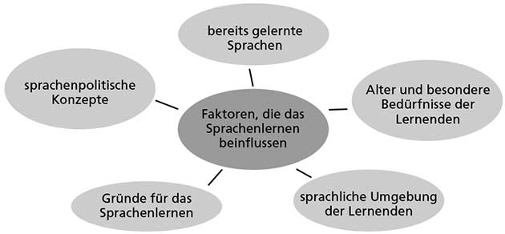
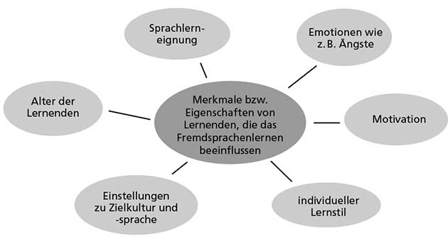
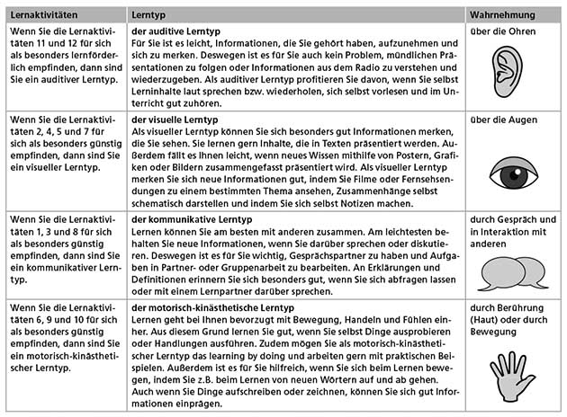
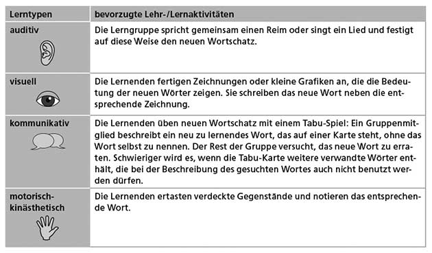

Deutsch als fremde Sprache
Im ersten Kapitel werden Sie zunächst über die Faktoren nachdenken, die das Fremdsprachenlernen Ihrer Zielgruppe beeinflussen:
- Welche Motivation und welche Vorerfahrungen?
- Wer sind die Lernenden? Sie bringen unterschiedliche kognitive Voraussetzungen mit, haben individuelle Vorlieben, wie sie lernen möchten, und schließlich sind sie auch unterschiedlich motiviert, Sprachen zu lernen.
- Vergleich Kinder, Jugendliche. vs. Erwachsene
Das folgende Schaubild fasst die Kontextfaktoren, die das Sprachenlernen Ihrer Lernenden beeinflussen, noch einmal zusammen:

2.1 Wie lernt man eigentlich Fremdsprachen?
Im zweiten Kapitel haben wir für Sie relevante Ergebnisse der Sprachlehr- und -lernforschung zusammengestellt. Wir erläutern, was wissenschaftliche Theorien über das Lernen allgemein und das Lernen von Sprachen im Besonderen aussagen. Diese Theorien sollen Ihnen helfen, die Lernprozesse, die Sie im Unterricht bei Ihren Lernenden beobachten, zu deuten und zu verstehen. Die theoretischen Modelle erklären viele Aspekte des Sprachenlernens wie z.B. die Entstehung von Fehlern: Manche können Sie mit Ihrem Unterricht beeinflussen, andere nicht oder nur schwer, aber Sie können Probleme des Sprachenlernens dadurch erkennen und neu bewerten.
Ziel dieses Teilkapitels ist, dass Sie
allgemeine Lerntheorien kennenlernen, die jeweils bestimmte Aspekte des Lernens beschreiben,
Rückschlüsse von den allgemeinen Lerntheorien auf das Sprachenlernen ziehen können,
wissen, welche Konsequenzen man aus den Lerntheorien für Unterricht ableiten kann.
2.2 Was weiß man über das Lernen:
Lernen vs. Erwerben: Wenn ein kleines Kind mit dem Spracherwerb beginnt, verwendet man dafür den Begriff erwerben. Mit Erwerben wird ein ungesteuerter Vorgang bezeichnet, der in einer außerunterrichtlichen Situation im Rahmen von natürlicher Kommunikation stattfindet.
Im Unterschied zum Erwerben bezeichnet lernen einen Prozess, der durch Unterricht gesteuert wird.
Beim Lernen verändern sich Wissen, Einstellungen, Fertigkeiten oder Verhaltensweisen aufgrund von (unterrichtlicher) Erfahrung.
Lerntheorien
Behaviorismus: Das Lernen wird in dieser Theorie als eine Verhaltensänderung gesehen. Dazu wird ein auslösender Impuls (stimulus) benötigt, auf den eine Reaktion der Lernerin / des Lerners (response) erfolgt. Lernen ist demnach ein imitativer Prozess. Das heißt: Die Umwelt liefert das korrekte Vorbild, das Lernende nachahmen sollen. (Drill-Übungen ; aber für Automatisierung sehr wichtig)
Kognitivismus: Der Kognitivismus geht davon aus, dass gelernt wird, indem neue Informationen mit zuvor bereits verarbeiteten und gespeicherten Informationen verknüpft werden. Lernen ist nach dieser Theorie also ein Prozess, in dem bewusst Neues erkannt und in bestehendes Wissen integriert wird. Aus diesem Grund ist das einsichtige und bewusste Lernen in dieser Theorie zentral. Für den Unterricht kann man aus dieser Theorie ableiten, dass die Vermittlung von Lernstrategien und die Förderung von bewusstem Lernen wesentlich sind. Auch ein induktives Vorgehen im Unterricht, bei dem die Lernenden aufgefordert sind, Regelmäßigkeiten selbst zu entdecken, wird durch diese Theorie begründet.
Konnektionismus: Diese Lerntheorie erklärt vor allem, wie neue Informationen verarbeitet und im Gedächtnis gespeichert werden. Vernetzung durch neurale Netze wobei unterschiedliche Gehirnareale unterschiedliche Aufgabe zukommen. Die konnektionistische Lerntheorie beschreibt Lernen als einen Prozess, bei dem Wissen in Form von Knotenpunkten in Netzen gespeichert wird. Je öfter man die Verbindungen zwischen Wissenseinheiten aktiviert, desto besser sind sie im Gedächtnis verankert. Für Sprachunterricht leitet sich aus dieser Lerntheorie ab, dass neue Informationen oder Wissen so vermittelt werden, dass Lernende Verknüpfungen aufbauen können. So können neue Wörter in Wortfeldern angeboten werden, sie können mit Synonymen oder gemeinsam mit ihrem Gegenteil, dem Antonym, präsentiert werden; all dies wäre nach dieser Theorie förderlich für das Lernen.
Konstruktivismus: Lernen wird erst durch die Aufnahme der neuen Informationen in das bereits vorhandene Wissen eines Lernenden möglich. Lernen ist also die aktive Konstruktion von neuem Wissen. Konstruktivistische Lerntheorien betonen aber darüber hinaus die Individualität von Lernprozessen und damit auch von Lernergebnissen: Der Mensch erschafft in Wechselwirkung mit seiner Umwelt neues Wissen. Nur wenn ein Lerner selbst ein Mindestmaß an Interesse, Lust oder Druck empfindet, wird sie/er sich neues Wissen aneignen können. Für die unterrichtliche Gestaltung von Lernprozessen ist zentral, dass Lernende sich ihre Vorkenntnisse bewusst machen, dass sie an diese anknüpfen und ihr Wissen ordnen. Lernende erarbeiten sich durch Ausprobieren, Beobachten und durch Entdecken neues Wissen und stellen dieses Wissen im besten Fall auch in eigenen Produkten dar (in Texten, in mündlichen Präsentationen, in Form von Grafiken oder Modellen). Dies ist die Vorgehensweise von projektorientiertem Lernen. Mit dem Konstruktivismus verändert sich das Verständnis von der Rolle der Lehrkraft. Sie unterstützt beim Lernen, indem sie Lernwege aufzeigt und die Selbstorganisation der Lernenden fördert. Dementsprechend haben Lehrende auch Aufgaben als Lernberater und Moderatoren.
Interaktionismus: Für den Interaktionismus ist die soziale Umwelt der Lernenden zentral für das Lernen. Die sprachliche Entwicklung eines Menschen ist gemäß dieser Theorie abhängig von den Möglichkeiten und Erfahrungen, die im Umgang mit anderen gesammelt werden. Mit anderen Menschen tauschen wir Ideen und Lösungen für Probleme aus und verwenden dabei Sprache. Dabei wird gemeinsames Lernen möglich. Da der Fremdsprachenunterricht aber auf die Kommunikation außerhalb des Klassenzimmers vorbereiten will, ergibt sich ein Paradox. Es gibt verschiedene Möglichkeiten, dieses Paradox zu überwinden (Gruppen- oder Partnerarbeit, Rollenspiele).
Die folgende Abbildung zeigt Ihnen im Überblick, was Sie über die verschiedenen Arten erfahren haben, wie Lernen funktioniert:

2.3 Was weiß man über den Spracherwerb?
Ziel dieses Teilkapitels ist, dass Sie
- verschiedene Spracherwerbskontexte voneinander unterscheiden können,
- Spracherwerbshypothesen kennenlernen und wissen, welche Konsequenzen sie für die Unterrichtsgestaltung haben können,
- wissen, warum es im Spracherwerbsprozess zu Fehlern kommt, und Sie die Fehler Ihrer Lernenden analysieren und Vermutungen über ihre Ursachen anstellen können,
- wissen, inwiefern sich das Lernen einer ersten Fremdsprache vom Lernen aller weiteren Fremdsprachen unterscheidet.
Spracherwerbskontexte
- No Muttersprache: Erstsprache weil sonst verwirrend
- Menschen können monolingual, bilingual oder multilingual aufwachsen
- Sukzessive Zweisprachigkeit: Ab 3 Jahren eine weitere Sprache lernt
- Fremdsprachen werden unterrichtlich gesteuert gelernt, da sie meist im Unterricht oder in anderen institutionell geprägten Lehr- und Lernsituationen vermittelt wird; insbesondere im Vergleich zu Zweitsprachen
Spracherwerbshypothesen
angeborene Spracherwerbsfähigkeit: Kinder rezipieren die Umwelt
Nativistische Ansätze sagen, dass Menschen eine angeborene Fähigkeit haben, Sprache zu erwerben. Aus diesen Überlegungen ist die Identitätshypothese entstanden, die auch den Fremdsprachenerwerb auf der Basis der angeborenen Fähigkeiten zu erklären versucht.
Die Identitätshypothese geht davon aus, dass die zu lernende Sprache eine Art Spracherwerbsmechanismus auslöst, wie er auch beim Erstspracherwerb wirkt. Als Begründung wird die generelle Sprachfähigkeit von Menschen angeführt. Fremdsprachen werden auf der Basis angeborener Sprachlernfähigkeiten gelernt.
Grundannahme der Lehr-/Lernbarkeitshypothese: Erwerbssequenzen (kam, kommte, kamte, nein, kam) sind also relativ gut vorhersehbare Abfolgen, in denen bestimmte Bereiche von Sprache erworben werden. Diese Erwerbssequenzen müssen offenbar durchlaufen und können nur selten übersprungen werden.
Die Lehr-/Lernbarkeitshypothese geht davon aus, dass es eine vorgegebene Reihenfolge beim Erwerb von Strukturen einer Sprache gibt und sich diese Reihenfolge nicht beeinflussen oder verändern lässt. Lernprozesse können nur dann erfolgreich verlaufen, wenn sie auf das nächste Stadium des Erwerbs bei den Lernenden Bezug nehmen. Damit eine sprachliche Struktur aufgenommen, mental verarbeitet und in den Wissensstand aufgenommen werden kann, muss bei den Lernenden die mentale Bereitschaft dazu bestehen.
Lernervarietäten (Lernersprache): Eine Lernervarietät ist eine systematische Abweichung von der theoretischen Norm einer Sprache. Sie ist vom individuellen Stand des Spracherwerbs abhängig. Beispiel: Man hört haufig du trinkst, und sagt dann ich trinkst.
Die Interlanguage-Hypothese stellt eine Weiterentwicklung der Identitätshypothese dar. Lernende bilden nach dieser Hypothese fortlaufend Lernervarietäten oder Zwischensprachen aus. Diese weisen Elemente der Erst- und Zielsprache auf, jedoch auch eigene, nicht in einer der beiden anderen Sprachen zu findende Phänomene. Diese Zwischensprachen sind gleichermaßen systematisch und variabel, d.h., die Zwischenschritte geschehen nicht willkürlich, befinden sich aber in einem stetigen Prozess der Veränderung. Nach der Interlanguage-Hypothese kann es dabei zu sogenannten Fossilierungen kommen, wenn sich bestimmte, zum Teil fehlerhafte Äußerungen, fest einprägen und nicht mehr verändert werden.
Einflüsse der Erstsprache auf das Fremdsprachenlernen (Transfers): Ist der Transfer negativ, entstehen also daraus Fehler, nennt man dies Interferenz. Demnach sind alle Fehler, die durch einen negativen Transfer von der Erst- in die Zweitsprache entstehen, Interferenzfehler.
Die Kontrastivhypothese geht davon aus, dass eine neue Sprache schlechter gelernt wird bzw. schwieriger zu lernen ist, wenn sie große strukturelle Unterschiede zur Erstsprache aufweist. Je größer die Unterschiede zwischen Erstsprache und zweiter Sprache sind, desto mehr Interferenzen ergeben sich. Diese lassen sich aufgrund von kontrastiven Vergleichen beider Sprachen herausfiltern und erklären. Gegen die Kontrastivhypothese ist einzuwenden, dass strukturelle Ähnlichkeiten zwischen Sprachen nicht automatisch zu erfolgreichem Lernen führen müssen. Außerdem kann man von einem konkreten Fehler nicht automatisch auf einen Rückgriff auf die Erstsprache schließen.
Aus der Psycholinguistik stammt das Konzept des mentalen Lexikons (neuronales Netz). Es beschreibt, wie mentale Repräsentationen von Wörtern in Verbindung zueinander stehen und wie diese es Menschen ermöglichen, Sprache zu benutzen. Ein Wort im Kopf eines Sprachbenutzers ist einerseits über grammatische Merkmale (Wortart, Flexion, Genus, Morphologie usw.) und andererseits über phonologische (Aussprache) bzw. graphematische Merkmale (z.B. durch das Schriftbild) im mentalen Lexikon verankert, damit es produziert werden kann. Schließlich beinhaltet der Eintrag im mentalen Lexikon noch eine bestimmte Bedeutung sowie Querverweise zu anderen Wörtern und Konzepten. Wörter, die synonym sind oder zum selben Wortfeld gehören, werden mit aufgerufen, ebenso wie individuelle Vorstellungen (persönliche Bezüge).
Im Rahmen der Inputhypothese wird davon ausgegangen, dass das Sprachenlernen von Erst- und Fremdsprache ohne ausreichenden Input nicht möglich ist. Input ist in jeder Form von Kontakt mit Sprache möglich (Medien). Hier zählt die Qualität des sprachlichen Inputs. Input vs. Intake. Input bezieht sich hier nur auf das, was die Lernenden an Sprachkontakt erreicht; Intake bezieht sich auf das, was sie davon wirklich verarbeiten. Die Inputhypothese besagt, dass der sprachliche Input für die Lernenden zum Intake werden muss. Lernende können neue sprachliche Phänomene dann aktiv verwenden, wenn sie sie für sich mit Sinn füllen und sie bewusst verarbeiten. Drill-Übungen, die den Erwerb von Wortschatz und Strukturen durch schematisches Wiederholen trainieren, sind aus Sicht der Inputhypothese keine angemessene Übungsform.
Der Output zeigt, was jemand in einer Sprache tatsächlich produktiv anwenden kan Während Output das bezeichnet, was sich am Ende des Unterrichts als dessen nachweisbares Ergebnis feststellen lässt, beschreibt Outcome die langfristige Wirkung des Gelernten und zeigt damit die sprachliche Kompetenz der Lernenden.
Die Interaktionshypothese besagt, dass der Unterricht – verstanden als Interaktion zwischen Lehrenden und Lernenden oder der Lernenden untereinander – einer Sequenz potentieller Lernmomente gleichkommt, die die Lernenden je nach Bereitschaft, Motivation, Zielsetzung usw. unterschiedlich nutzen. Sprache wird erlernt durch das Aushandeln von Bedeutungen (Partnerarbeit).
Mehrsprachigkeitsmodelle: Die verschiedenen Sprachen interagieren bei der Sprachverarbeitung/-produktion miteinander.
Wir haben uns nun aus der Sicht von Fehlererkennung und Fehlerdiagnose mit verschiedenen Spracherwerbshypothesen und ihren Auswirkungen auf den Unterricht beschäftigt. Dabei wurde deutlich,
- dass die Fähigkeit, Sprachen zu erwerben, den Menschen angeboren ist,
- dass die Erstsprache das Lernen der Fremdsprachen beeinflusst,
- dass das Fremdsprachenlernen ähnlich wie der Erwerb der Erstsprache in bestimmten Sequenzen geschieht,
- dass Lernende nicht allen Input, den sie bekommen, verarbeiten und speichern,
- dass Lernen aber dann geschieht, wenn Input zu Intake wird,
- dass Lernende in Interaktion mit anderen durch das Aushandeln von Bedeutung lernen.

Die Erkenntnisse der Spracherwerbshypothesen können Ihnen helfen, Fehler, die Ihre Lernenden machen, zu verstehen, zu analysieren, ihre Herkunft einzuschätzen und sinnvoll mit ihnen umzugehen. Wie wir gesehen haben, sind Fehler nicht nur Produkte, die im Fremdsprachenunterricht vorkommen und beseitigt werden müssen. Vielmehr geben sie wichtige Hinweise darauf, wieweit die Lernenden auf dem Weg von der Erst- zur Zielsprache vorangeschritten sind.
Konsequenzen für den Unterricht
Vielleicht hatten Sie selbst schon erste Ideen, wie man die Aussagen der besprochenen Hypothesen für die Progressionim Unterricht nutzbar machen kann, d.h. für die Reihenfolge, was wann im Fremdsprachenunterricht gelernt werden soll und kann. Anhand der Lehr-/Lernbarkeitshypothese fassen wir noch einmal beispielhaft zusammen, welche Hinweise Ihnen diese für die Unterrichtsprogression und Ihre Unterrichtsplanung gibt:
Bestimmte Stufen im Erwerbsprozess einer Sprache können nicht übersprungen werden, sondern müssen nacheinander durchlaufen werden. Ihr Lehrwerk berücksichtigt dies. Die Lehr-/Lernziele sind an die Erwerbssequenzen der Lernenden angepasst.
Bei der Vermittlung von neuen Strukturen sollte nicht das komplette Phänomen mit all seinen Sonderfällen präsentiert werden, sondern nur die Teilbereiche, die zur aktuellen Erwerbssequenz der Lernenden passen und verstehbar sind.
Um den Lernleistungen individueller Lernender gerecht zu werden, kann es manchmal nötig sein, sehr langsam vorzugehen und Wiederholungsschleifen einzubauen.
Fehler, die entstehen, wenn Lernende noch nicht in der Lage sind, in eine neue Erwerbssequenz einzutreten, können zwar korrigiert werden, die Korrekturen wirken sich aber erst dann aus, wenn die Lernenden in der Lage sind, das neue Phänomen – aufbauend auf dem bereits Bekannten – zu verstehen. Erst dann können sie es auch korrekt anwenden.
2.4 Worin unterscheiden sich meine Lernenden?
Alter
Angeborene Spracherwerbsmechanismen treten in Kraft, ohne dass sie den Lernenden bewusst sind, und sorgen für sogenanntes implizites Lernen. Aufbauend auf den von Natur aus vorhandenen Lernfähigkeiten entwickelt der Mensch im Laufe seines Lebens aber auch bewusste Lern- und Problemlösetechniken, die immer mehr Wirkung entfalten. Wir sprechen dann von explizitem Lernen.
Da man beobachten kann, dass Kinder in einigen Bereichen schneller als Erwachsene zielsprachliches Niveau erreichen, wird die Existenz einer sensiblen Phase oder kritischen Periode des Spracherwerbs diskutiert. Zentrale Annahme ist dabei, dass bestimmte Kenntnisse, Eigenschaften, Fähigkeiten oder Verhaltensweisen – in diesem Fall Elemente einer weiteren Sprache – nur in einem begrenzten Zeitfenster erworben werden können. Man nimmt an, dass, wenn die sensible Phase abgeschlossen ist, im Normalfall nach dem Ende der Pubertät, diese Elemente einer Sprache nicht mehr bis zum zielsprachlichen Niveau erworben werden können.
Kinder häufig im Vorteil beim Spracherwerbung, aber: Im Sprachunterricht lernen Jugendliche und junge Erwachsene Fremdsprachen gewöhnlich sogar schneller als Kinder. Teile des Spracherwerbs beruhen auf implizitem Lernen, aber je älter die Lernenden sind, desto bedeutsamer werden bewusste Lernprozesse und das explizite Lernen. Erwachsene lernen Untersuchungen zufolge lieber und gut durch Unterricht. Sie können explizite Lernprozesse aufgrund ihrer kognitiven Entwicklung besser verarbeiten und reflektieren als Kinder, weshalb beispielsweise die Bewusstmachung von grammatikalischen Strukturen für diese Zielgruppe besonders sinnvoll ist.
Auch im ungesteuerten Zweitsprach(en)erwerb sind jüngere Erwachsene häufig im Vorteil. Zwar weisen sie Fehler bei der Aussprache und der Verwendung von Kasus, Tempus, Modus usw. (Morphosyntax) auf, doch im Bereich von Wortschatz und von Sprache in konkreten Situationen (Pragmatik) erreichen sie schneller zielsprachliche Kompetenzen als Kinder. Erwachsene verfügen über mehr Weltwissen als Kinder und können sprachlichen Kontakt mit Deutschsprachigen anders verarbeiten und bewusst reflektieren. Daher können sie ihr eigenes sprachliches Verhalten besser an die Umgebung anpassen bzw. Normen besser wahrnehmen und einordnen. Kulturelle Konventionen, die in verschiedenen Situationen eingehalten werden müssen, werden von ihnen bewusst verarbeitet.
Merkmale impliziten Lernens im Unterricht für Kinder:
Die Fertigkeiten Hören und (Nach-)Sprechen stehen im Vordergrund.
Es gibt keine direkten Hinweise auf die unbestimmten Artikel und die Deklination im Akkusativ, dennoch sind die Artikel in der Akkusativform deutlich visualisiert.
Neue Wörter werden mit Bildkarten visualisiert; die Aufmerksamkeit wird durch Farben auf die Genera gelenkt.
Geübt wird, indem gespielt und interagiert wird (Ratespiel, Tamburinspiel, Spiel: Eins, zwei, drei oder vier).
Die Schülerinnen und Schüler bewegen sich im Klassenzimmer und prägen sich darüber die unbestimmten Artikel und die Nomen mit demselben Artikel an der Tafel ein (Merkhilfe).
Die Verwendung des unbestimmten Artikels im Akkusativ wird in ganz verschiedenen Lernaktivitäten mehrfach wiederholt.
Mit der folgenden Übersicht fassen wir noch einmal zusammen, worin sich das Lernen von Kindern, Jugendlichen und Erwachsenen unterscheidet:
 ### Emotionen und Kognitionen beim Sprachlernen
### Emotionen und Kognitionen beim Sprachlernen
Wir müssen auf die Bedürfnisse und Voraussetzungen der Lernenden bei der Unterrichtsplanung und -durchführung eingehen. Wenn dies gelingt, spricht man von Lernerorientierung im Unterricht.
Lernerfaktoren sind besondere Merkmale oder Eigenschaften von Lernenden, die das individuelle Sprachenlernen maßgeblich beeinflussen, z.B. das Alter der Lernenden, aber auch Ängste im Zusammenhang mit dem Lernen einer Sprache, die Einstellung der Lernenden zur Zielsprache und zur Zielkultur, die Motivation und Sprachlerneignung sowie der individuelle Lernstil.

Bla bla über Lerntypen:
  Impulsive versus reflexive Lernende
Man unterscheidet Lernende, die eher reflexiv an eine Lernaufgabe herangehen, und solche, die eher impulsiv beim Lernen vorgehen. Diese Bezeichnungen drücken aus, wie spontan Lernende beim Lösen von Aufgaben sind. Reflexiv handelnde Lernende wollen ihre Aufgaben erst gründlich durchdenken, bevor sie sich äußern. Deswegen brauchen sie Zeit, um zu einer Lösung zu kommen, und arbeiten meist langsamer und sorgfältiger als impulsiv vorgehende Lernende. Die Arbeitsergebnisse zeigen in der Regel weniger Fehler als die von impulsiven Lernenden, die in etwa die gleiche Sprachkompetenz haben. Reflexive Lernende formulieren ihre Aussagen oft innerlich vor, bevor sie sich zu Wort melden. Impulsive Lernende äußern sich dagegen oft spontan und nehmen Fehler in Kauf.
Globale versus analytische Lernende
Mit den Begriffen global und analytisch unterscheidet man die Art und Weise, wie Lernende den Lernstoff erschließen. Globale Lernende sind solche, die zunächst einen Überblick über den Lernstoff möchten, bevor sie die Details verstehen können. Im Unterschied dazu konzentrieren sich analytische Lernende zunächst auf Einzelheiten, die sie dann zu einem Gesamtbild kombinieren. Analytische Lernende lernen gern allein, während globale Lernende einen kommunikativen Unterricht und den Austausch mit anderen bevorzugen.
Ambiguitätstolerante versus ambiguitätsintolerante Lernende
Diese beiden Begriffe beschreiben, inwieweit eine Lernerin / ein Lerner bereit ist, auch Informationen aufzunehmen und zu verarbeiten, die sie/er nicht vollständig verstehen kann. Ambiguitätstolerante Lernende kommen grundsätzlich gut in natürlichen Kommunikationssituationen zurecht, in denen sie nicht alles verstehen, besonders wenn schnell oder im Dialekt gesprochen wird. Ambiguitätsintolerante Lernende fühlen sich in solchen Situationen schnell überfordert und finden sie eher unangenehm. Sie haben das Bedürfnis, neue Wörter exakt und Gespräche vollständig zu verstehen, und suchen nach präzisen Übersetzungen in ihrer Erstsprache.
2.5 Zusammenfassung
In Kapitel 2 stand die Frage im Mittelpunkt, welche Voraussetzungen und Bedingungen das Sprachenlernen beeinflussen. Um diese Frage zu beantworten, haben wir Theorien vorgestellt, die allgemeine Aussagen über das Lernen treffen. Dabei wurde deutlich, dass es nicht eine einzige, allumfassende Theorie gibt, die den Lernprozess abbildet, sondern dass die Lerntheorien verschiedene Aspekte des Lernens beleuchten und erklären können. Somit hat jede der vorgestellten Theorien – mit unterschiedlicher Gewichtung – Aussagekraft für das Fremdsprachenlernen. Da besonders die kognitiven Lerntheorien mit ihrem Bezug zu anderen Wissenschaftsgebieten (z.B. Neurowissenschaften und Lernpsychologie) sehr viel über die menschliche Informationsverarbeitung zeigen, sind sie eine wichtige Grundlage für viele didaktische Schlussfolgerungen im Verlauf dieser Einheit.
Zwar kann man aus den allgemeinen Lerntheorien Rückschlüsse für das Lernen von Sprachen ziehen, sie können aber nicht alle Spracherwerbsprozesse erklären. An dieser Stelle springen die sogenannten Spracherwerbshypothesen ein. Mit ihrer Hilfe kann man den Spracherwerbsprozess beschreiben und daraus didaktische Empfehlungen für die Gestaltung von Lernprozessen ableiten. Aus der Lehr-/Lernbarkeitshypothese lässt sich z.B. schließen, dass im Unterricht eine Progression sinnvoll ist, die die natürlichen Erwerbssequenzen berücksichtigt. Auch die Inputhypothese hat konkrete Auswirkungen auf die Unterrichtsgestaltung, indem sie betont, dass die Lernenden zum Sprachenlernen einen qualitativ und quantitativ reichhaltigen Input benötigen. Darüber hinaus können Spracherwerbshypothesen bestimmte Phänomene des Lernprozesses erklären: So lassen sich mithilfe der Kontrastivhypothese und der Interlanguage-Hypothese die Ursachen von Fehlern erkennen. Fehler werden aus dieser Perspektive als natürliche Begleiterscheinungen im Lernprozess betrachtet und analysiert.
Außerdem haben Sie gesehen, dass individuelle Merkmale und Eigenschaften das Sprachenlernen in besonderer Weise prägen. Zu diesen individuellen Lernerfaktoren gehören affektive Faktoren wie Motivation, Angst und Einstellung sowie kognitive Faktoren wie Sprachlerneignung und Lernstile. Auch das Alter der Lernenden wirkt sich auf das Fremdsprachenlernen aus, da die Eigenschaften und Lernvoraussetzungen von Kindern, Jugendlichen und Erwachsenen sich stark unterscheiden können. Wenn Sie als Lehrkraft die Lernerfaktoren kennen, verstehen Sie, warum Lernen individuell und immer anders abläuft. Dies ist eine Voraussetzung dafür, dass Sie einen Unterricht gestalten können, der auf die unterschiedlichen Bedürfnisse der Lernenden eingeht.
Reste
Anschließend wenden wir uns den Lernenden genauer zu und thematisieren ihre individuellen Unterschiede: wie sich das Alter auf den Lernerfolg auswirkt, welche emotionalen und kognitiven Faktoren beim Lernen eine Rolle spielen und wie wichtig es ist, dass alle Lerntypen einen Zugang zum Lernstoff finden.
Thema des dritten Kapitels ist, wie man lernen kann, Sprachen zu lernen. Wir zeigen, wie man die Individualität der Lernenden im Unterricht berücksichtigen kann. Wir stellen dar, wie Lernende ihr Lernen reflektieren, wie sie immer selbstständiger und systematischer beim Lernen vorgehen und wie Sie als Lehrende diese Prozesse anleiten können. Weiter möchten wir Ihnen zeigen, mit welchen Strategien Ihre Lernenden lernen können und wie Sie sie darin unterstützen können, sich diese Vorgehensweisen anzueignen und zu üben.
Im vierten Kapitel legen wir den Fokus ganz darauf, dass Deutsch für die meisten Lernenden nicht die erste, sondern bereits die zweite oder sogar dritte Fremdsprache ist. Wir zeigen, wie man die Verwandtschaft zwischen Sprachen zum Lernen nutzen kann und welche Möglichkeiten es darüber hinaus gibt, das Erlernen einer zweiten oder weiteren Fremdsprache zu erleichtern und die vorhandenen Potenziale der Lernenden zu nutzen. Hier führen wir didaktisch-methodische Prinzipien ein, die Ihnen beim Unterrichten von Deutsch als zweiter Fremdsprache Orientierung bieten und die wir mit konkreten Vorschlägen für Ihre Unterrichtspraxis veranschaulichen.